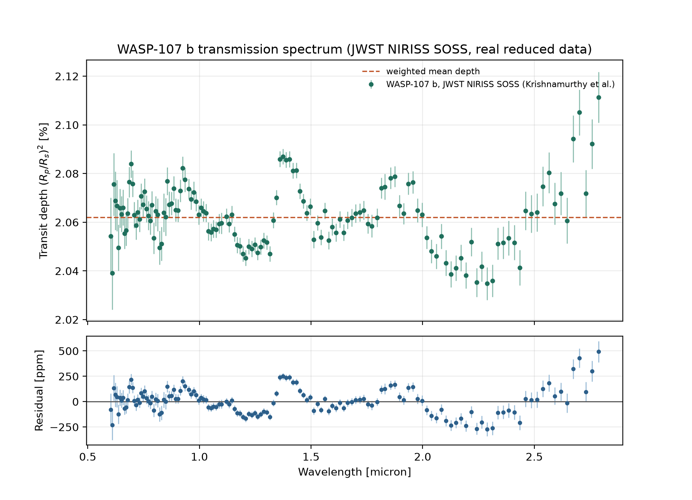

Exoplanet Atmosphere Report · JWST NIRISS SOSS
An unusually puffy warm Neptune whose extended, low-density atmosphere makes it one of the clearest windows JWST has found into a giant planet's chemistry — photochemically produced SO2, and methane at a fraction of the abundance simple chemistry predicts.
All values below are pulled directly from the NASA Exoplanet Archive composite parameters table (queried live via its TAP service), not approximated.
| Radius | 10.54 Earth radii (~0.94 Jupiter radii) |
|---|---|
| Mass | 30.5 Earth masses (~0.096 Jupiter masses) |
| Bulk density | ~0.13 g/cm³ — among the lowest-density planets known, roughly the density of cork |
| Orbital period | 5.72 days |
| Semi-major axis | 0.055 AU |
| Equilibrium temperature | 736 K |
| Host star | WASP-107, K-type dwarf, Teff = 4425 K, 0.657 Rsun, 0.683 Msun |
| Distance | 64.7 parsecs (~211 light-years) |
| Discovery | 2017, transit photometry (WASP survey) |
WASP-107 b's low mass paired with a Jupiter-scale radius gives it an unusually large atmospheric scale height — the same total temperature and gravity produce a much bigger, more observable signal per unit of atmospheric composition than a typical hot Jupiter. That combination made it an early, high-priority JWST target for atmospheric characterization.
Dyrek et al. (2024, Nature) used JWST's MIRI instrument to detect sulfur dioxide (SO2) in its atmosphere — a photochemical product, meaning it can only form if high-energy stellar radiation is actively driving chemistry in the upper atmosphere, not simply present from formation — and reported only an upper limit on methane (CH4), well below simple equilibrium-chemistry predictions. A follow-up NIRSpec study, Sing et al. (2024, Nature), pushed further and detected CH4 directly at 4.2σ, at an abundance of about 1.0 ± 0.5 ppm — roughly three orders of magnitude below what equilibrium chemistry alone would predict at this temperature. Read together, the two results tell a consistent story: methane isn't absent, it's severely depleted, most likely by the same vigorous vertical mixing that dredges up hot, methane-poor gas from deep in the planet and by ongoing photochemical destruction.
The figure is generated directly from reduced JWST data: NIRISS Single Object Slitless Spectroscopy (SOSS) transmission-spectrum products for WASP-107 b, spectral orders 1 and 2 combined, from Krishnamurthy et al. (Zenodo record 17085766). Transit depth (Rp/Rs)² is plotted against wavelength with each point's own measurement uncertainty.

scripts/analyze_spectrum.py from the bundled data files.Reading the shape: the rise toward longer wavelengths (beyond ~2.4 microns) and the bump near 1.4 microns are consistent with water-vapor absorption, the dominant near-infrared feature this instrument is most sensitive to — a qualitative read of the shape, not a quantitative molecular-detection test on its own. The peak-to-trough figure (765 ppm) is an extreme-value statistic with no uncertainty attached, more sensitive to a single noisy bin than a proper feature measurement would be. The SO2 and methane results referenced above come from separate, longer-wavelength MIRI and NIRSpec observations not included in this NIRISS dataset — this figure shows the near-infrared water signature only, not the full multi-instrument picture.
System parameters were queried live from the NASA Exoplanet Archive's TAP service (pscomppars table). The transmission spectrum is the reduced NIRISS SOSS data product released publicly by the observing team on Zenodo. See data/ for the raw files and scripts/analyze_spectrum.py for the exact analysis that produced the figure and statistics above (python scripts/analyze_spectrum.py to rerun it).